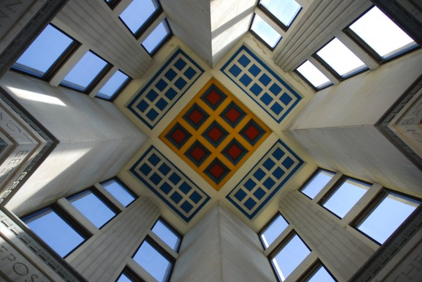

June 19, 2007
The winning frame.
Ryan McElwain won the 2007 vote with his third photograph. The original tally recorded 14 votes for that image.

From the 2007 archive
Vote tally
The original count for all twenty contestants and their ten submitted photographs.
| Contestant | Photo 01 | Photo 02 | Photo 03 | Photo 04 | Photo 05 | Photo 06 | Photo 07 | Photo 08 | Photo 09 | Photo 10 |
|---|---|---|---|---|---|---|---|---|---|---|
| Shelly & Ethan Olufson (Contestant 01) | – | 3 | – | – | – | – | – | – | – | 1 |
| Eric & Truman Diebold (Contestant 02) | 4 | 6 | 3 | – | 3 | – | 3 | – | – | – |
| Christine Marko (Contestant 03) | – | – | 3 | – | – | – | – | – | – | 1 |
| Greg Johnson (Contestant 04) | 5 | – | 1 | 1 | 3 | – | 8 | 2 | 1 | 1 |
| Ben Armour (Contestant 05) | – | 1 | – | 2 | 1 | 5 | 3 | 2 | 1 | 2 |
| Brian Wright (Contestant 06) | – | 3 | – | 1 | – | – | – | – | 1 | 1 |
| Dawn Boomsma & Carrie Kucharski (Contestant 07) | 1 | 1 | – | 1 | 1 | 1 | – | – | 3 | 2 |
| Gwen Spargue (Contestant 08) | – | 1 | 5 | – | 2 | – | – | – | – | – |
| Jennier Brothers (Contestant 09) | 2 | – | 2 | – | 3 | 2 | 3 | – | 2 | – |
| David & Katie Kucharski (Contestant 10) | 1 | 1 | 1 | – | 1 | 2 | – | 4 | – | – |
| Kyle & Lisa Johnston (Contestant 11) | 3 | 1 | 1 | – | 1 | – | – | – | – | 1 |
| Aaron & Mary Gurley (Contestant 12) | 2 | 1 | – | – | – | – | – | – | 5 | – |
| Melissa Mazza (Contestant 13) | 2 | 1 | 2 | – | 1 | 1 | – | – | – | – |
| Paul Skelton (Contestant 14) | – | 1 | – | 1 | – | 1 | 2 | – | 4 | 1 |
| Ryan Hembree (Contestant 15) | 2 | – | – | – | – | – | 1 | – | – | – |
| Dave McElwain (Contestant 16) | 1 | – | – | – | 1 | 2 | – | – | – | – |
| Ryan McElwain (Contestant 17) | 3 | 1 | 14 | – | 1 | – | 4 | 5 | – | – |
| Sarah Wright (Contestant 18) | – | – | – | – | – | – | – | – | 1 | – |
| Terry Shipman (Contestant 19) | 1 | 4 | – | 1 | 1 | 1 | 1 | – | 1 | – |
| Dean Olufson (Contestant 20) | – | 2 | 1 | – | – | – | 2 | 3 | – | – |